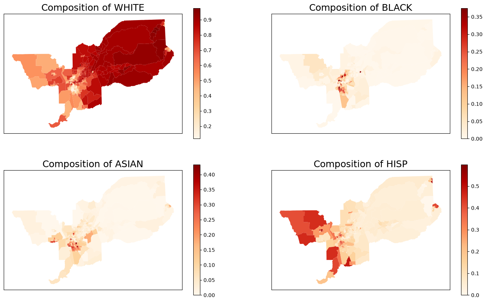
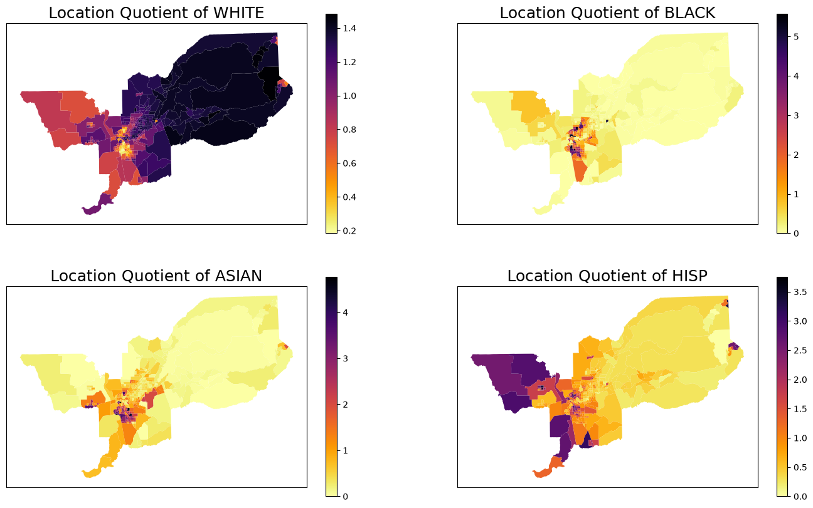
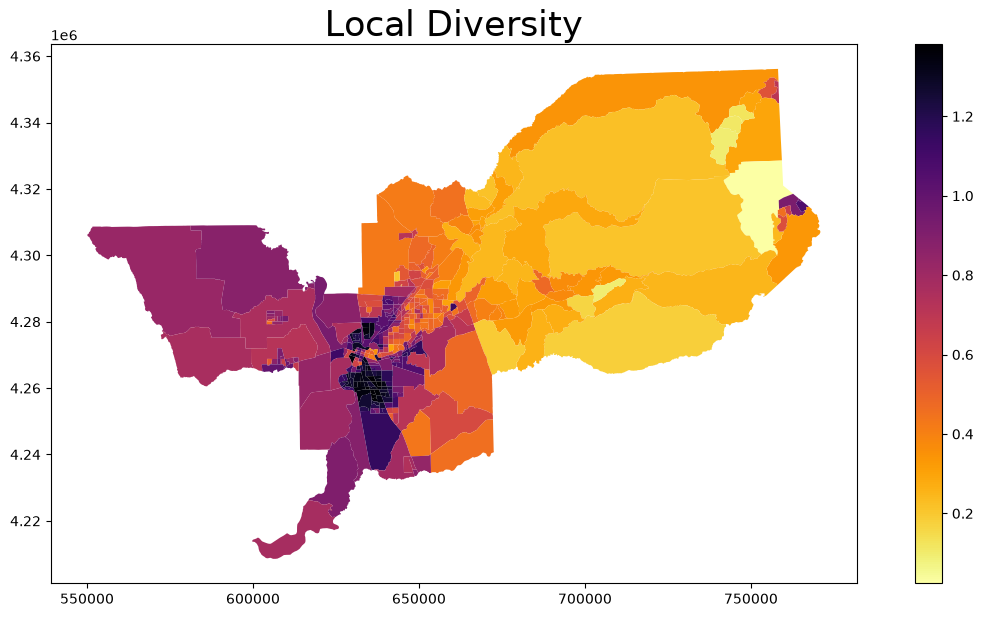
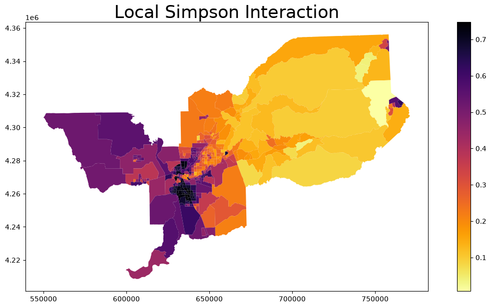
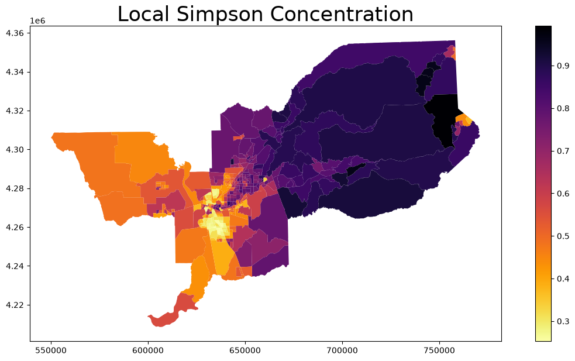
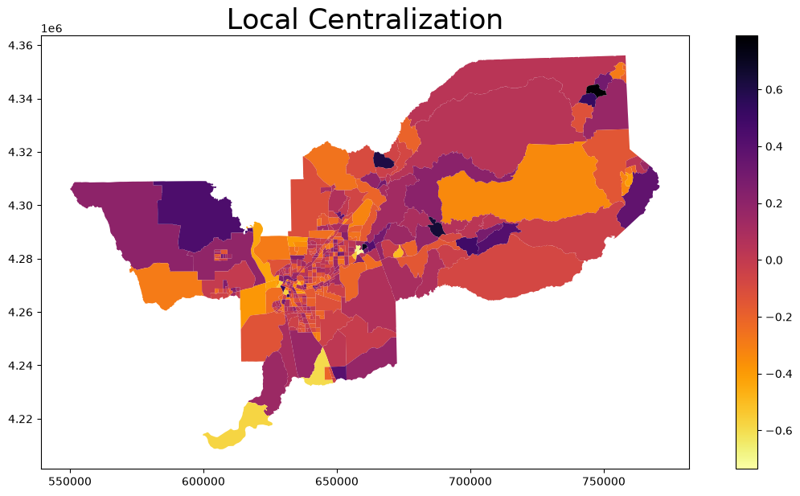

Local Measures of segregation¶
Table of Contents¶
This is an example notebook of functionalities for local measures of the segregation module. Firstly, we need to import the packages and functions we need:
import libpysal
import segregation
import geopandas as gpd
import matplotlib.pyplot as plt
from segregation.local import MultiLocationQuotient, MultiLocalDiversity, MultiLocalEntropy, MultiLocalSimpsonInteraction, MultiLocalSimpsonConcentration, LocalRelativeCentralization
Then it’s time to load some data to estimate segregation. We use the data of 2000 Census Tract Data for the metropolitan area of Sacramento, CA, USA.
We use a geopandas dataframe available in PySAL examples repository.
For more information about the data: https://github.com/pysal/libpysal/tree/main/libpysal/examples/sacramento2
input_df = gpd.read_file(libpysal.examples.load_example("Sacramento1").get_path("sacramentot2.shp"))
input_df = input_df.to_crs(input_df.estimate_utm_crs())
input_df.columns
Index(['FIPS', 'MSA', 'TOT_POP', 'POP_16', 'POP_65', 'WHITE', 'BLACK', 'ASIAN',
'HISP', 'MULTI_RA', 'MALES', 'FEMALES', 'MALE1664', 'FEM1664', 'EMPL16',
'EMP_AWAY', 'EMP_HOME', 'EMP_29', 'EMP_30', 'EMP16_2', 'EMP_MALE',
'EMP_FEM', 'OCC_MAN', 'OCC_OFF1', 'OCC_INFO', 'HH_INC', 'POV_POP',
'POV_TOT', 'HSG_VAL', 'POLYID', 'geometry'],
dtype='str')
Important: all classes that start with “Multi_” expects a specific type of input of multigroups since the index will be calculated using many groups. On the other hand, other classes expects a single group for calculation of the metrics.
The groups of interest are White, Black, Asian and Hispanic population. Therefore, we create an auxiliary list with only the necessary columns for fitting the index.
groups_list = ['WHITE', 'BLACK', 'ASIAN','HISP']
We also can plot the spatial distribution of the composition of each of these groups over the tracts of Sacramento:
for i in range(len(groups_list)):
input_df['comp_' + groups_list[i]] = input_df[groups_list[i]] / input_df['TOT_POP']
fig, axes = plt.subplots(ncols = 2, nrows = 2, figsize = (17, 10))
input_df.plot(column = 'comp_' + groups_list[0],
cmap = 'OrRd',
legend = True, ax = axes[0,0])
axes[0,0].set_title('Composition of ' + groups_list[0], fontsize = 18)
axes[0,0].set_xticks([])
axes[0,0].set_yticks([])
axes[0,0].set_facecolor('white')
input_df.plot(column = 'comp_' + groups_list[1],
cmap = 'OrRd',
legend = True, ax = axes[0,1])
axes[0,1].set_title('Composition of ' + groups_list[1], fontsize = 18)
axes[0,1].set_xticks([])
axes[0,1].set_yticks([])
axes[0,1].set_facecolor('white')
input_df.plot(column = 'comp_' + groups_list[2],
cmap = 'OrRd',
legend = True, ax = axes[1,0])
axes[1,0].set_title('Composition of ' + groups_list[2], fontsize = 18)
axes[1,0].set_xticks([])
axes[1,0].set_yticks([])
axes[1,0].set_facecolor('white')
input_df.plot(column = 'comp_' + groups_list[3],
cmap = 'OrRd',
legend = True, ax = axes[1,1])
axes[1,1].set_title('Composition of ' + groups_list[3], fontsize = 18)
axes[1,1].set_xticks([])
axes[1,1].set_yticks([])
axes[1,1].set_facecolor('white')

Location Quotient (LQ)¶
index = MultiLocationQuotient(input_df, groups_list)
index.statistics
array([[1.36543221, 0.07478049, 0.16245651, 0.38088068],
[1.18002164, 0. , 0.14836683, 1.18544649],
[0.68072696, 0.03534425, 0. , 3.31119136],
...,
[0.99613635, 0.10550213, 0.20912883, 1.86164972],
[0.92802194, 0.24709231, 0.47460486, 1.92804399],
[1.06821891, 0.07674888, 0.70759745, 1.29220137]], shape=(403, 4))
Important to note that column k has the Location Quotient (LQ) of position k in groups. Therefore, the LQ of the first unit of 'WHITE' is 1.36543221 and, for example the LQ of 'BLACK' of the last spatial unit is 0.07674888. In addition, in this case we can plot the LQ of every group in the dataset similarly the way we did previously with the composition:
for i in range(len(groups_list)):
input_df['LQ_' + groups_list[i]] = index.statistics[:,i]
fig, axes = plt.subplots(ncols = 2, nrows = 2, figsize = (17, 10))
input_df.plot(column = 'LQ_' + groups_list[0],
cmap = 'inferno_r',
legend = True, ax = axes[0,0])
axes[0,0].set_title('Location Quotient of ' + groups_list[0], fontsize = 18)
axes[0,0].set_xticks([])
axes[0,0].set_yticks([])
axes[0,0].set_facecolor('white')
input_df.plot(column = 'LQ_' + groups_list[1],
cmap = 'inferno_r',
legend = True, ax = axes[0,1])
axes[0,1].set_title('Location Quotient of ' + groups_list[1], fontsize = 18)
axes[0,1].set_xticks([])
axes[0,1].set_yticks([])
axes[0,1].set_facecolor('white')
input_df.plot(column = 'LQ_' + groups_list[2],
cmap = 'inferno_r',
legend = True, ax = axes[1,0])
axes[1,0].set_title('Location Quotient of ' + groups_list[2], fontsize = 18)
axes[1,0].set_xticks([])
axes[1,0].set_yticks([])
axes[1,0].set_facecolor('white')
input_df.plot(column = 'LQ_' + groups_list[3],
cmap = 'inferno_r',
legend = True, ax = axes[1,1])
axes[1,1].set_title('Location Quotient of ' + groups_list[3], fontsize = 18)
axes[1,1].set_xticks([])
axes[1,1].set_yticks([])
axes[1,1].set_facecolor('white')

Local Diversity¶
index = MultiLocalDiversity(input_df, groups_list)
index.statistics[0:10] # Values of first 10 units
array([0.34332326, 0.56109229, 0.70563225, 0.29713472, 0.22386084,
0.29742517, 0.12322789, 0.11274579, 0.09402405, 0.25129616])
input_df['Local_Diversity'] = index.statistics
input_df.head()
ax = input_df.plot(column = 'Local_Diversity', cmap = 'inferno_r', legend = True, figsize = (15,7))
ax.set_title("Local Diversity", fontsize = 25)
Text(0.5, 1.0, 'Local Diversity')

Local Entropy¶
index = MultiLocalEntropy(input_df, groups_list)
index.statistics[0:10] # Values of first 10 units
array([0.24765538, 0.40474253, 0.50900607, 0.21433739, 0.16148146,
0.21454691, 0.08889013, 0.08132889, 0.06782401, 0.18127186])
input_df['Local_Entropy'] = index.statistics
input_df.head()
ax = input_df.plot(column = 'Local_Entropy', cmap = 'inferno_r', legend = True, figsize = (15,7))
ax.set_title("Local Entropy", fontsize = 25)
Text(0.5, 1.0, 'Local Entropy')
Local Simpson Interaction¶
index = MultiLocalSimpsonInteraction(input_df, groups_list)
index.statistics[0:10] # Values of first 10 units
array([0.15435993, 0.33391595, 0.49909747, 0.1299449 , 0.09805056,
0.13128178, 0.04447356, 0.0398933 , 0.03723054, 0.11758548])
input_df['Local_Simpson_Interaction'] = index.statistics
input_df.head()
ax = input_df.plot(column = 'Local_Simpson_Interaction', cmap = 'inferno_r', legend = True, figsize = (15,7))
ax.set_title("Local Simpson Interaction", fontsize = 25)
Text(0.5, 1.0, 'Local Simpson Interaction')

Local Simpson Concentration¶
index = MultiLocalSimpsonConcentration(input_df, groups_list)
index.statistics[0:10] # Values of first 10 units
array([0.84564007, 0.66608405, 0.50090253, 0.8700551 , 0.90194944,
0.86871822, 0.95552644, 0.9601067 , 0.96276946, 0.88241452])
input_df['Local_Simpson_Concentration'] = index.statistics
input_df.head()
ax = input_df.plot(column = 'Local_Simpson_Concentration', cmap = 'inferno_r', legend = True, figsize = (15,7))
ax.set_title("Local Simpson Concentration", fontsize = 25)
Text(0.5, 1.0, 'Local Simpson Concentration')

Local Centralization¶
Let’s assume we want to calculate the Local Centralization to the group 'BLACK':
index = LocalRelativeCentralization(input_df, 'BLACK', 'TOT_POP')
index.statistics[0:10] # Values of first 10 units
/home/runner/work/segregation/segregation/segregation/local/local_relative_centralization.py:58: FutureWarning: The KDTree class is deprecated and will be removed in a future version of libpysal. Use ``scipy.spatial.KDTree`` directly.
kd = lps.cg.kdtree.KDTree(np.array(points))
array([ 0.03443055, -0.29063264, -0.19110976, 0.30243257, 0.03929596,
0.16414059, 0.78917647, 0.53129412, -0.12673592, -0.20216325])
input_df['Local_Centralization'] = index.statistics
input_df.head()
ax = input_df.plot(column = 'Local_Centralization', cmap = 'inferno_r', legend = True, figsize = (15,7))
ax.set_title("Local Centralization", fontsize = 25)
Text(0.5, 1.0, 'Local Centralization')
